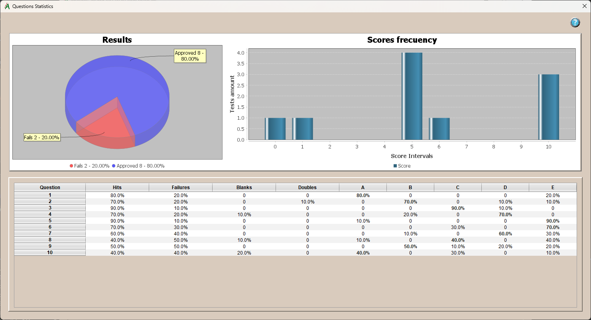

Statistics:
 In the statistics window there are two graphs:
- One shows, in the form of a pie chart, the percentages of passes and fails.
- The other is a bar chart presenting the frequency of ratings on the scale defined in the rating parameters.
The table shows the statistical detail of the questions with respect to the students.
- Hits: Percentage of students who got the question right.
- Failures: Percentage of students who failed the question.
- Blanks: Percentage of students who left the answer blank.
- Doubles: Percentage of students who placed multiple or wrong marks on the answer to this question.
- A: Percentage of students who answered this option, “A”.
- B: Percentage of students who answered this option, "B".
- C: Percentage of students who answered this option, "C".
- D: Percentage of students who answered this option, "D".
- E: Percentage of students who answered this option, "E".
Important: The bold value indicates that this is the correct answer choice.